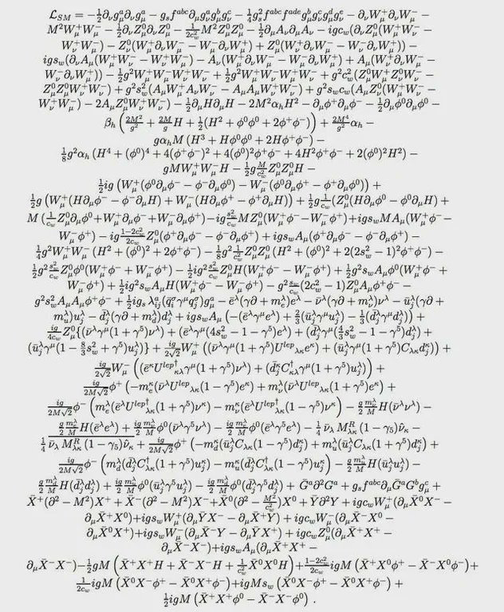

La ecuación compacta que ves suele escribirse como $\\mathcal L_{SM}$ y se descompone en bloques:
Todo esto respeta una simetría fundamental: $SU(3)_c \\times SU(2)_L \\times U(1)_Y$ (color, isospín débil y hipercarga).
Cada fuerza tiene un “campo” y sus “onditas” son partículas mensajeras: gluones (fuerte), W/Z/fotón (débil y electromagnetismo). Estos términos dicen cómo “vibran” y se autopropagan esos campos, e incluyen que los gluones se atraen/repelen entre sí (por eso la fuerza fuerte confina quarks).
con tensores de campo $G,W,B$ construidos a partir de los potenciales $G_\\mu^a,\\,W_\\mu^i,\\,B_\\mu$ y las constantes de acoplamiento $g_s, g, g'$. Los términos no abelianos generan auto-interacciones (ej. gluón–gluón).
Los quarks y leptones se mueven y “sienten” una fuerza si tienen la carga correspondiente (eléctrica, débil o de color). Matemáticamente eso se escribe con una derivada especial que “incluye” el campo de la fuerza: así aparecen las interacciones automáticamente.
Las representaciones ($T^a,\\tau^i,Y$) codifican en qué “cargas” vive cada fermión (quarks vs. leptones; izquierdos vs. derechos).
El Higgs es un campo que llena el espacio. Cuando “se enciende” (toma un valor constante), las partículas que interactúan con él adquieren masa. De paso, mezcla los campos de la fuerza débil y del electromagnetismo para producir el fotón y el bosón Z con las masas observadas.
La excitación física alrededor de $v$ es el bosón de Higgs $h$ (descubierto en 2012).
Estos son los “acoples” entre materia y Higgs. Al encenderse el Higgs, esos acoples se convierten en masas de electrones, quarks, etc. Como las matrices no son diagonales, aparecen las mezclas entre sabores (los quarks cambian de tipo en procesos débiles: matriz CKM; los neutrinos oscilan: PMNS).
Tras la ruptura electrodébil, $m_f=Y_f\\,v/\\sqrt2$. La diagonalización simultánea no es posible para todos los sectores $\⇒$ aparecen matrices CKM/PMNS.
El fotón y el Z son combinaciones de dos campos originales. Esa “rotación” está fijada por el ángulo de Weinberg. El resultado: el fotón no tiene masa y lleva el electromagnetismo; el Z sí tiene masa y participa en interacciones débiles neutrales.
Constantes de acoplamiento $(g_s,g,g')$, masas y mezclas de fermiones (matrices Yukawa), masa y acoplo propio del Higgs $(m_h,\\lambda)$, y parámetros de mezcla (CKM/PMNS). En total, unas dos decenas largas de números que medimos en experimentos.